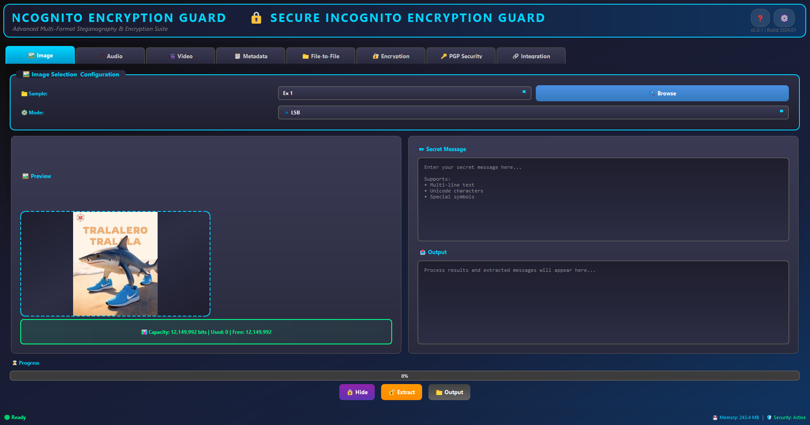
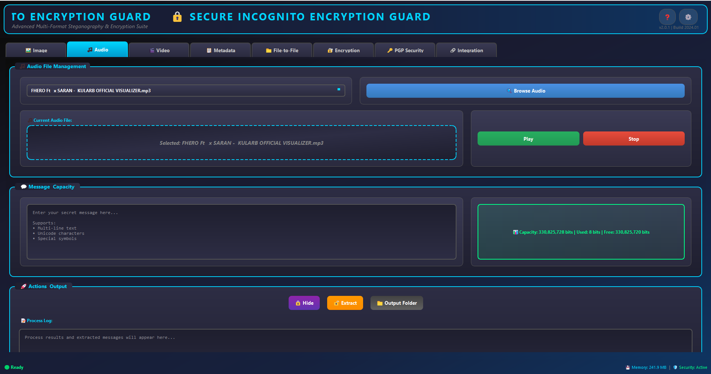
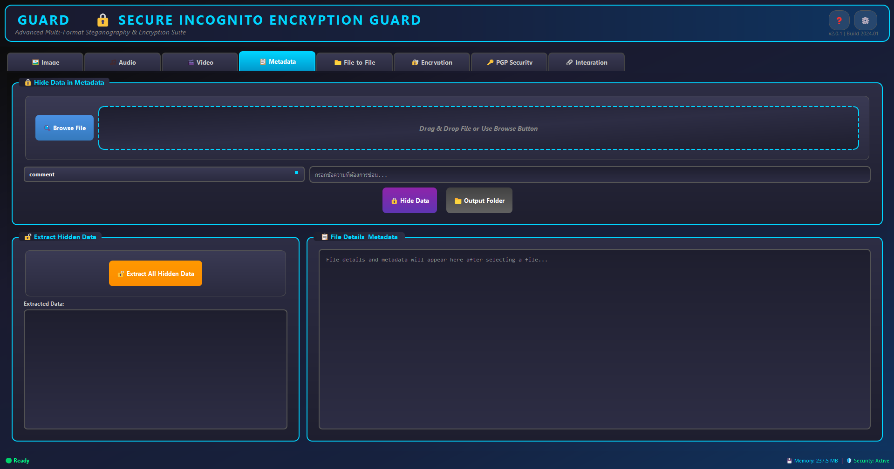
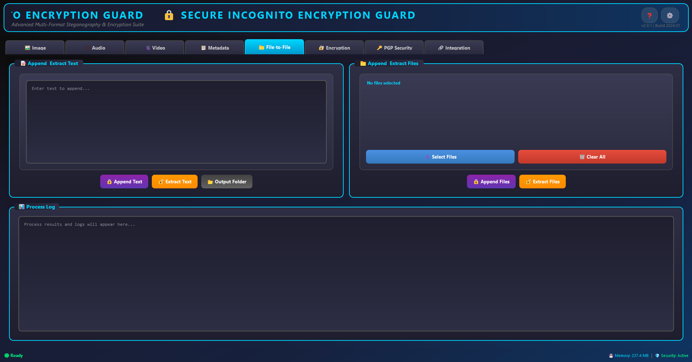
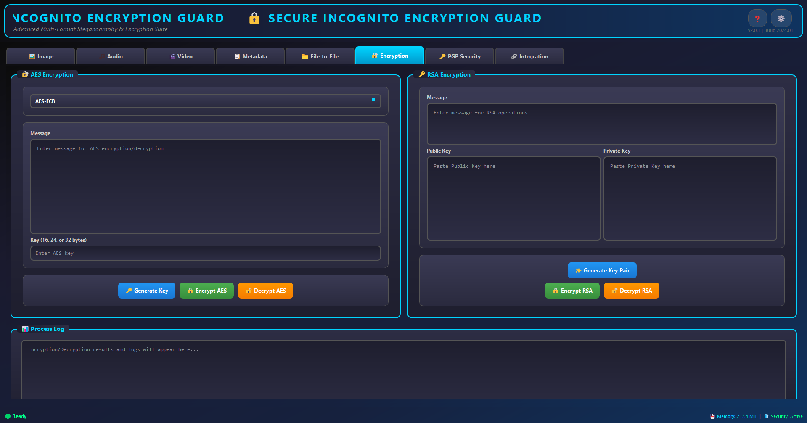
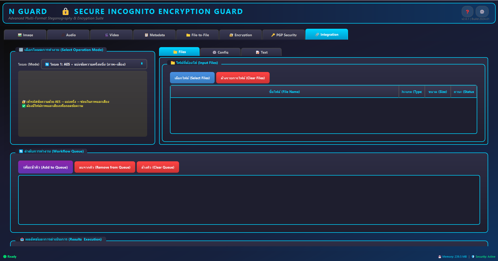

📸 ภาพหน้าจอโปรแกรม

หน้าจอหลัก
อินเตอร์เฟสหลักของโปรแกรม SIENG

ซ่อนข้อมูล
หน้าจอสำหรับซ่อนข้อมูลในไฟล์สื่อ

เข้ารหัสข้อมูล
หน้าจอสำหรับเข้ารหัสข้อมูลด้วย AES-256

การจัดการไฟล์
หน้าจอสำหรับจัดการไฟล์และข้อมูล

การตั้งค่า
หน้าจอสำหรับปรับแต่งการตั้งค่าโปรแกรม

การซ่อนข้อมูลขั้นสูง
หน้าจอสำหรับการซ่อนข้อมูลด้วยเทคนิคขั้นสูง

การจัดการคีย์
หน้าจอสำหรับจัดการคีย์และรหัสผ่าน

Integration Tab
หน้าจอสำหรับการทำงานแบบบูรณาการ